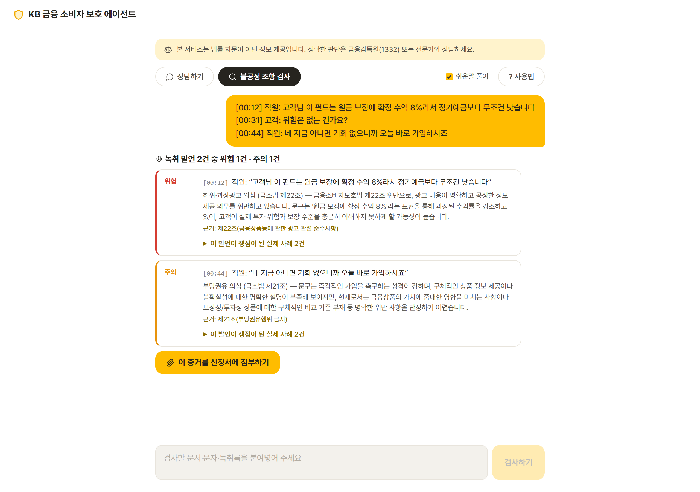
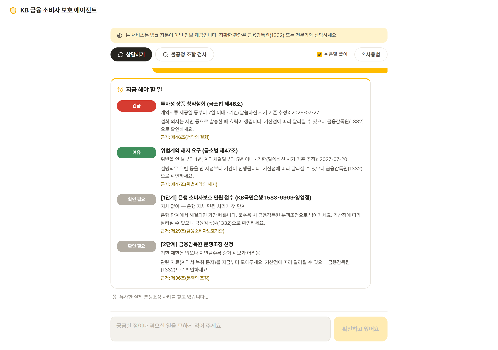
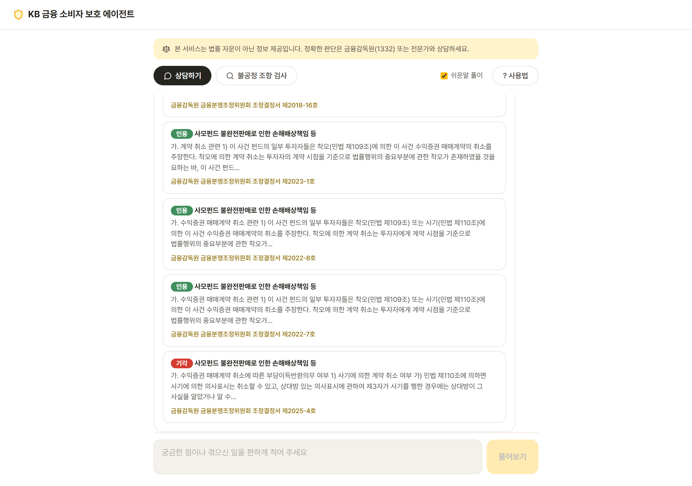
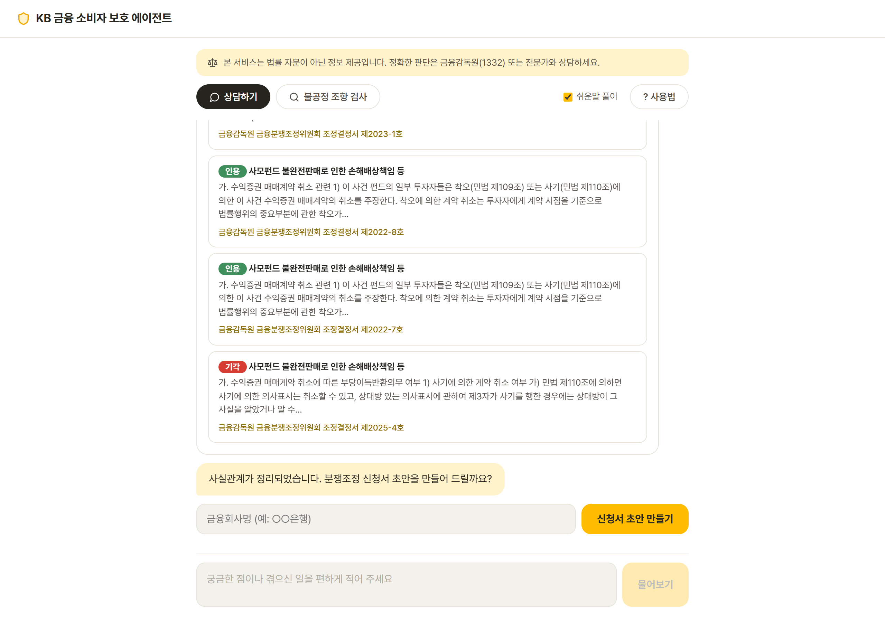
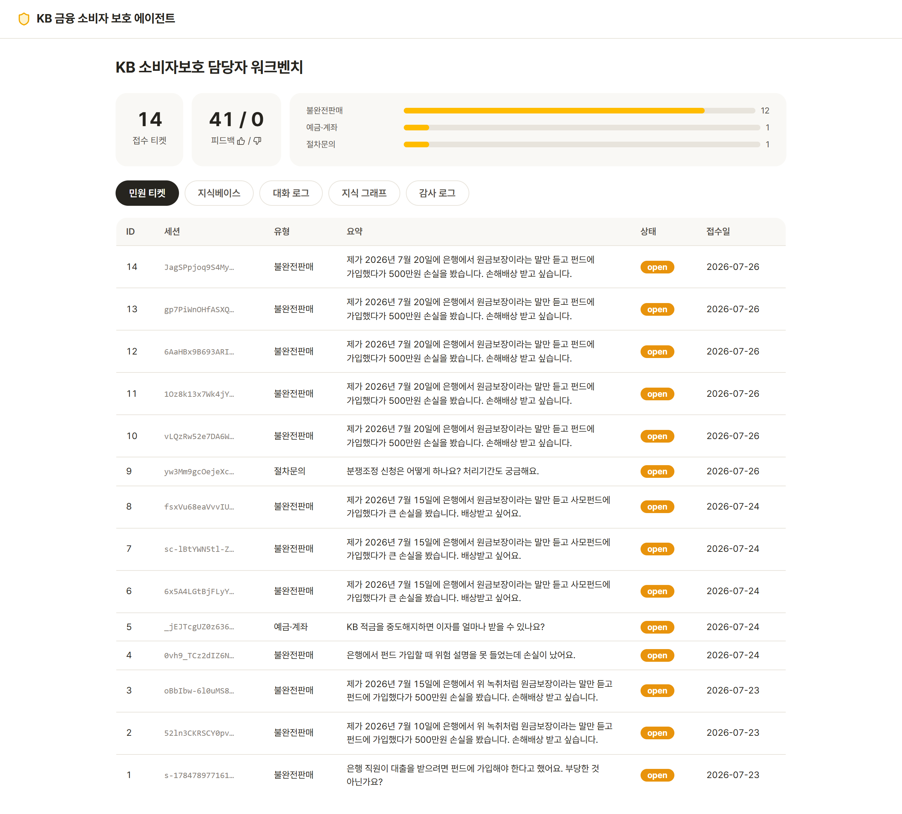
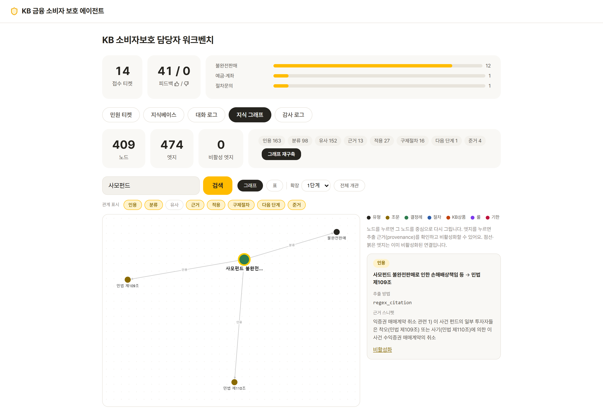

실제 금융감독원 분쟁조정 결정례와 법령에만 근거해 답하는 완전 로컬 sLLM 에이전트. 상담 내용은 단 한 글자도 밖으로 나가지 않아요.
금융 도메인에서 신뢰는 기능보다 먼저입니다.
금감원 분쟁조정 결정례 98건, 금소법·통신사기피해환급법 등 217개 조문, FINE 금융용어사전 534개. 가상·합성 사례는 스키마 차원에서 차단됩니다 — 출처 없는 데이터는 코퍼스에 들어올 수 없어요.
EXAONE 3.5 (2.4B)를 Ollama로 CPU에서 직접 구동합니다. 민원 속 개인 금융정보가 외부 API로 전송되지 않는 것이 기능이자 아키텍처예요.
모든 답변에 조문·사례 인용을 강제하고, 인용 없는 생성은 거부합니다. 관련도가 낮으면 추측 대신 금융감독원(1332)을 안내해요. 확률 예측은 코드로 금지했습니다.
아래 모든 화면은 실제 시스템이 실제 데이터로 만든 결과입니다.
판매 상담 녹취를 붙여넣으면 직원 발언만 골라 금소법 6대 판매규제와 대조하고, 같은 발언이 쟁점이 된 실제 결정례를 연결합니다.
"원금 보장" 발언 → 금소법 제22조 위반 의심 + 실제 인용 결정례 2건

사건 시기를 파악해 청약철회 7일, 위법계약해지 1년 같은 법정 기한을 산술 계산하고 긴급도를 표시합니다. 조문 원문으로 검증된 기한만 계산하고, 나머지는 단정하지 않아요.
보이스피싱이면 "지금 바로 지급정지" — 1분이 피해액을 좌우하니까요

내 상황과 비슷한 실제 조정 사례의 인용/기각 분포와 결정 논거를 보여줍니다. "승소 확률 87%" 같은 만들어낸 수치는 없습니다 — 사실만 서술해요. 기각 사례도 함께 보여드립니다.
유사 사례 5건 중 인용 4건·기각 1건 · 통계적 한계 상시 고지 · 결정문 원문 링크

대화에서 정리한 사실관계로 분쟁조정 신청서 초안을 만들고, 녹취 검진 결과가 있으면 위반 발언 타임라인을 별첨 증거로 자동 삽입합니다. 검진 → 증거 → 신청서가 한 세션 안에서 이어져요.
유형별 증빙서류 체크리스트 동봉 · 마크다운 다운로드

은행 소비자보호 담당자를 위한 관리자 화면. 민원 티켓과 유형별 통계, 지식베이스 문서의 출처(KB 상품 약관 포함), 대화 로그(개인정보 마스킹 저장), 그리고 모든 관리 행위의 감사 기록을 한눈에 봅니다.
고객용 인스턴스에는 관리 라우트가 아예 등록되지 않습니다 — 노출면 자체가 없어요

결정례 원문이 실제로 인용한 조문을 정규식으로 추출해 그래프로 잇습니다. 구축에 LLM을 쓰지 않았기 때문에 엣지 하나하나의 추출 근거와 원문 스니펫을 그대로 확인할 수 있어요.
노드 409 · 엣지 474 (원문 인용 163) · 오추출 엣지는 사유를 남기고 비활성화

흐름 제어는 결정론적 코드가, 이해와 생성만 sLLM이 — 작은 모델의 약점을 구조로 보완합니다.